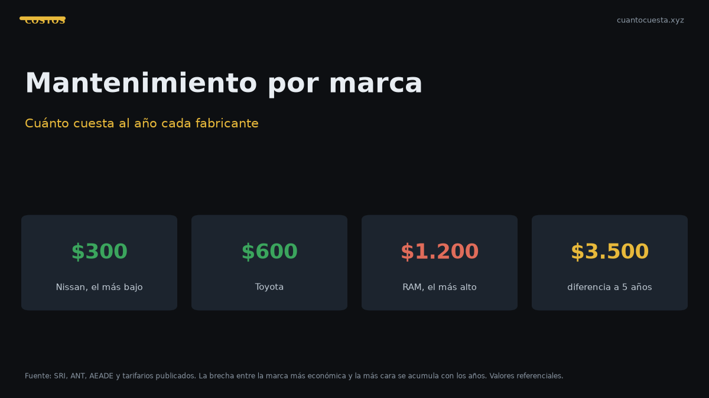

Cuánto cuesta mantener un auto por marca en Ecuador: tabla comparativa 2026
Tabla del costo anual real de mantenimiento por marca en Ecuador 2026 y cuánto suma esa diferencia a 5 años antes de elegir tu próximo auto.

Mantener un auto en Ecuador cuesta entre $300 y $1.200 al año solo en mantenimiento, según la marca. Entre la opción más económica (Nissan Qashqai o Versa, $300-500) y la más cara (RAM 1500, $800-1.200) hay hasta $900 anuales de diferencia, es decir, unos $4.500 a 5 años.
Ese número no aparece en la vitrina del concesionario, pero es el que decide si un auto te sale barato o caro tres años después de comprarlo.
Tabla comparativa: mantenimiento anual por marca
| Marca y modelo de referencia | Mantenimiento anual estimado |
|---|---|
| Nissan Qashqai / Versa | $300 - $500 |
| Toyota Hilux / RAV4 | $300 - $600 |
| Renault Duster / Koleos | $400 - $600 |
| Mazda CX-5 / Mazda 3 | $500 - $700 |
| Jeep Grand Cherokee / Wrangler | $700 - $1.000 |
| RAM 1500 | $800 - $1.200 |
Esta tabla cubre mantenimiento preventivo y correctivo: aceite, filtros, frenos, correas, bujías y repuestos de desgaste. No incluye combustible, seguro, matrícula ni llantas.
El rango más bajo de una marca no es el precio del primer año de garantía. Es el promedio de un auto ya fuera de garantía, con 3 a 6 años de uso y entre 40.000 y 90.000 km.
Por qué varían tanto los costos entre marcas
La diferencia no es capricho del taller. Se explica por tres factores concretos.
Disponibilidad y precio de repuestos
Una marca con alto volumen en Ecuador y red amplia de concesionarios y talleres independientes tiene repuestos más baratos y disponibles. Una marca de nicho, con menos unidades circulando, importa el repuesto bajo pedido: pagas más y esperas semanas.
Intervalos de mantenimiento
No todos los motores piden el mismo servicio con la misma frecuencia. Un motor que exige aceite sintético cada 15.000 km hace menos visitas al taller al año que uno que pide mineral cada 5.000 km. Si haces 12.000 km al año, esa diferencia puede significar dos o tres servicios anuales de diferencia.
Complejidad del motor y de la transmisión
Un motor simple, atmosférico y de cuatro cilindros tiene mantenimiento más barato que un turbo con inyección directa o una caja automática de doble embrague. Más tecnología significa más componentes que se desgastan y repuestos más especializados.
El costo por kilómetro: la cifra que compara de verdad
Un tarifario oficial de concesionario en Quito permite medir el mantenimiento por kilometraje recorrido:
| Servicio por kilometraje | Costo referencial |
|---|---|
| 10.000 km | $333,41 |
| 20.000 km | $434,21 |
| 30.000 km | $489,00 |
| 40.000 km | $595,24 |
| 50.000 km | $689,67 |
| 60.000 km | $799,85 |
| 100.000 km | $763,27 |
El costo promedio de ese tarifario es de $0,048 por kilómetro. Con ese dato puedes comparar cualquier auto: si haces 15.000 km al año, el mantenimiento programado ronda los $720 anuales antes de imprevistos.
Ojo con la trampa del kilometraje: quien hace 25.000 km al año paga casi el doble de mantenimiento que quien hace 12.000, aunque el auto sea el mismo. El costo de propiedad depende tanto de tu uso como de la marca.
Repuestos de referencia: lo que realmente se cambia
Estos precios corresponden a un SUV mediano en talleres certificados y muestran por qué un auto con más componentes de desgaste acumula facturas:
| Repuesto o servicio | Precio referencial | Frecuencia |
|---|---|---|
| Cambio de aceite y filtro | $50 - $90 | Cada 5.000 km* |
| Alineación y balanceo | $30 - $50 | Cada 10.000 km |
| Filtro de aire | $20 - $40 | Cada 10.000 km |
| Filtro de combustible | $30 - $60 | Cada 15.000 km |
| Líquido de frenos | $40 - $70 | Cada 30.000 km |
| Bujías | $50 - $100 | Cada 40.000 km |
| Pastillas de freno delanteras | $80 - $150 | Según desgaste |
| Amortiguadores delanteros | $200 - $350 | Según desgaste |
| Batería | $100 - $200 | Cada 2 a 4 años |
| Llanta (unidad) | $120 - $250 | Cada 40.000 a 60.000 km |
| Correa de distribución | $250 - $400 | Según fabricante |
*El intervalo de aceite depende del tipo: mineral cada 5.000-7.000 km, semisintético cada 7.000-10.000 km y sintético cada 10.000-15.000 km.
Suma un juego de cuatro llantas, amortiguadores y una correa de distribución y tendrás el año más caro de la vida del auto. Ese año no llega de golpe: se puede anticipar y ahorrar mes a mes.
El impacto a 5 años
Con las cifras de la tabla por marca, la diferencia acumulada es esta:
| Marca | Rango anual | Acumulado a 5 años |
|---|---|---|
| Nissan (Qashqai / Versa) | $300 - $500 | $1.500 - $2.500 |
| Toyota (Hilux / RAV4) | $300 - $600 | $1.500 - $3.000 |
| Renault (Duster / Koleos) | $400 - $600 | $2.000 - $3.000 |
| Mazda (CX-5 / Mazda 3) | $500 - $700 | $2.500 - $3.500 |
| Jeep (Grand Cherokee / Wrangler) | $700 - $1.000 | $3.500 - $5.000 |
| RAM 1500 | $800 - $1.200 | $4.000 - $6.000 |
Entre el piso de Nissan y el techo de RAM hay $3.500 de diferencia a 5 años solo en mantenimiento. A eso hay que sumar la diferencia en combustible, seguro y llantas, que suele ser mayor todavía.
Cómo elegir marca por costo de propiedad
Antes de firmar, haz este ejercicio en cuatro pasos:
- Consulta el costo del servicio de los 40.000, 60.000 y 100.000 km en el concesionario de tu ciudad. Son los tres más caros y los que definen el promedio.
- Cotiza el juego de pastillas de freno y un amortiguador en un taller independiente. Es la prueba rápida de qué tan caras son los repuestos.
- Verifica el intervalo de aceite y el tipo que exige el motor. Un intervalo corto multiplica las visitas al año.
- Calcula tu kilometraje real anual, no el promedio del país. Si haces 25.000 km al año, un auto de mantenimiento bajo te ahorra más que cualquier descuento de vitrina.
La marca más barata de comprar no es siempre la más barata de mantener. Un auto de $5.000 menos en la vitrina puede costarte $800 más al año en repuestos — y a 5 años esa diferencia se invierte. La excepción: si vendes el auto a los 2 o 3 años, el primer propietario absorbe la depreciación y el costo de mantenimiento pesa menos.
El detalle de la garantía
La garantía extiende la tranquilidad, pero no elimina el costo: obliga a hacer el mantenimiento en el concesionario, que suele cobrar más que un taller independiente. Modelos como el Kia Soluto ofrecen 10 años o 160.000 km, el Chevrolet Groove 7 años o 150.000 km. En ambos casos, el mantenimiento dentro de la garantía es obligatorio para conservarla — y ese costo ya está dentro de los rangos anuales de esta guía.
Resumen práctico
- Mantenimiento anual por marca en Ecuador: $300 a $1.200 según modelo.
- Las marcas de mayor volumen y red amplia (Nissan, Toyota) tienen el costo más bajo; las de nicho y alto cilindraje (Jeep, RAM) el más alto.
- El costo por kilómetro de referencia es $0,048, es decir unos $4.800 cada 100.000 km.
- A 5 años, la diferencia entre la marca más barata y la más cara supera los $3.500 solo en mantenimiento.
- Revisa el costo de los servicios de 40.000, 60.000 y 100.000 km antes de comprar.
- Todos los valores son referenciales y varían por ciudad, taller, año y estado del vehículo. Cotiza en tu ciudad antes de decidir.
Sigue leyendo
Cambio de aceite en Ecuador: cada cuántos km y cuánto cuesta (2026)
Cuánto cuesta el cambio de aceite en Ecuador, cada cuántos km hacerlo según el tipo de aceite y
Cuánto cuesta mantener un carro eléctrico vs uno a gasolina en Ecuador
Mantener un eléctrico cuesta menos en servicios: no lleva aceite ni filtros. Pero los talleres
Cuánto cuesta un seguro todo riesgo en Ecuador y cómo bajarlo
El seguro todo riesgo cuesta cerca del 4% del valor del auto: ~$600 al año para uno de $15.000.
Depreciación: cuánto pierde valor un carro en Ecuador por año
El avalúo del SRI baja 20% al año, con piso del 10% del PVP. Cuánto pierde valor tu carro en el
Top 10: cuánto cuesta mantener cada auto al mes en Ecuador (2026)
Desglose del costo mensual real de mantener los autos más vendidos de Ecuador: matrícula, segur
Cómo usamos estos datos
Las cifras de esta guía provienen de fuentes públicas oficiales y tarifarios de concesionarios publicados. Los valores son referenciales: tasas municipales, promociones y precios de repuestos varían. Verifica siempre en la entidad o concesionario antes de decidir.